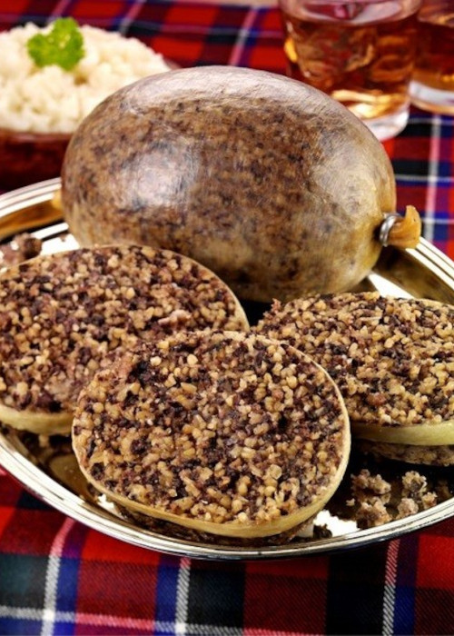

Edinburgh Castle
Edinburgh Castle is a historic castle in Edinburgh, Scotland. It stands on Castle Rock, which has been occupied by humans since at least the Iron Age, although the nature of the early settlement is unclear. There has been a royal castle on the rock since at least the reign of David I in the 12th century, and the site continued to be a royal residence until 1633. From the 15th century, the castle's residential role declined, and by the 17th century it was principally used as military barracks with a large garrison. Its importance as a part of Scotland's national heritage was recognised increasingly from the early 19th century onwards, and various restoration programmes have been carried out over the past century and a half.

The Isle of Skye
The Isle of Skye, or simply Skye, is the largest and northernmost of the major islands in the Inner Hebrides of Scotland. The island's peninsulas radiate from a mountainous hub dominated by the Cuillin, the rocky slopes of which provide some of the most dramatic mountain scenery in the country. Although Sgitheanach has been suggested to describe a winged shape, no definitive agreement exists as to the name's origins. The island has been occupied since the Mesolithic period, and over its history has been occupied at various times by Celtic tribes including the Picts and the Gaels, Scandinavian Vikings, and most notably the powerful integrated Norse-Gaels clans of MacLeod and MacDonald.

Loch Ness
Loch Ness is a large freshwater loch in the Scottish Highlands extending for approximately 37 kilometres (23 miles) southwest of Inverness. It takes its name from the River Ness, which flows from the northern end. Loch Ness is best known for claimed sightings of the cryptozoological Loch Ness Monster, also known affectionately as "Nessie" (Scottish Gaelic: Niseag). It is one of a series of interconnected, murky bodies of water in Scotland. At 56 km2 (22 sq mi), Loch Ness is the second-largest Scottish loch by surface area after Loch Lomond, but due to its great depth it is the largest by volume in Great Britain. Its deepest point is 230 metres (126 fathoms; 755 feet), making it the second deepest loch in Scotland after Loch Morar.
